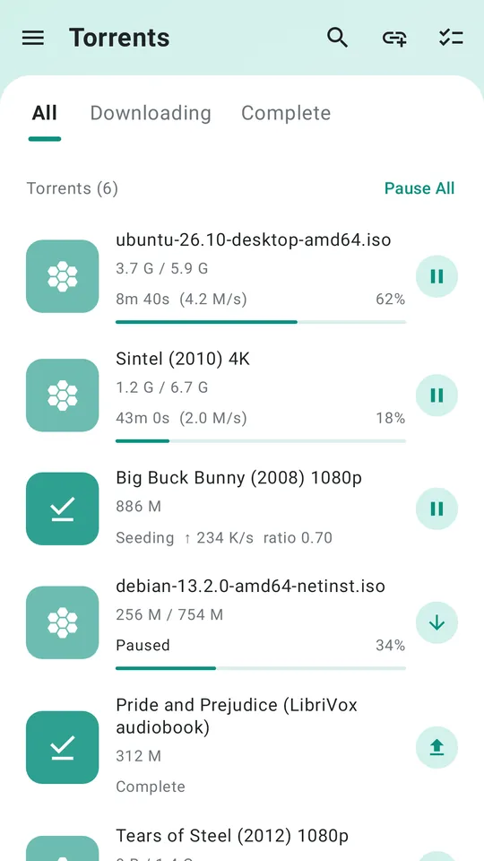
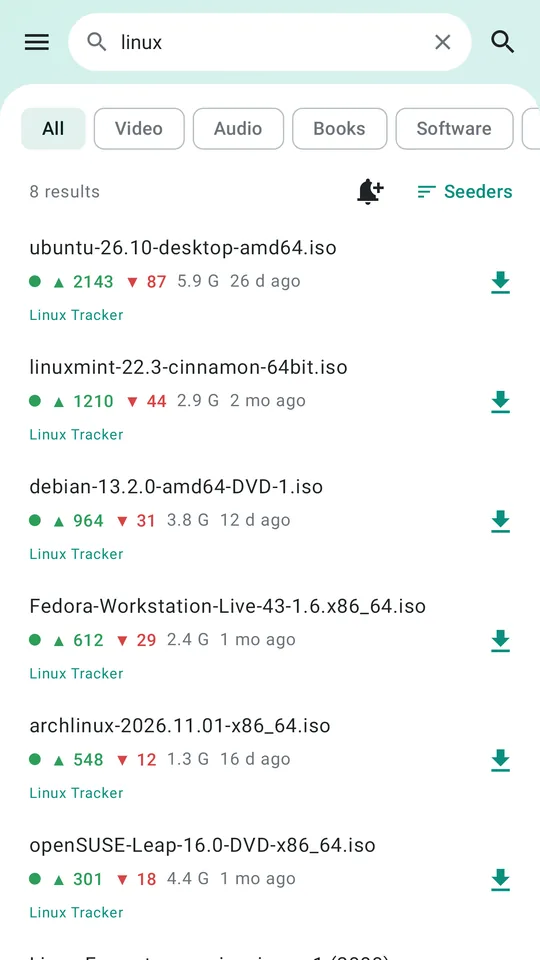
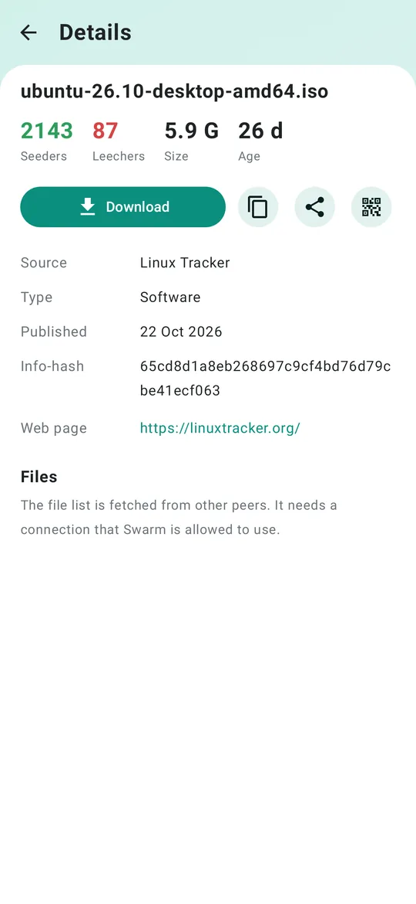
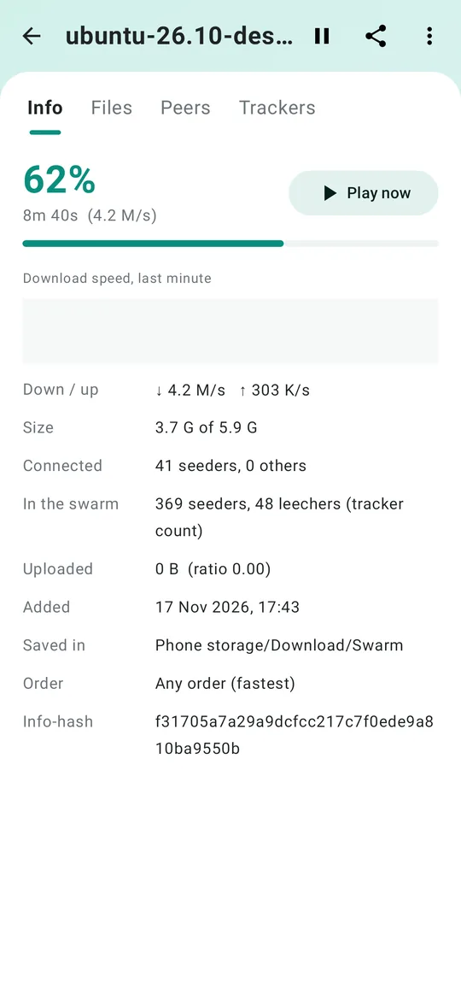
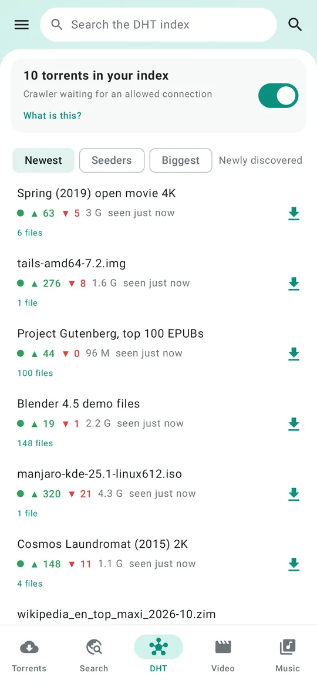
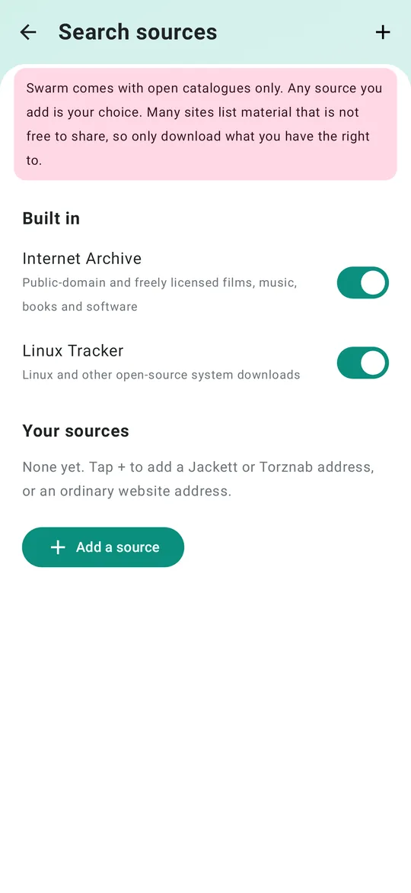
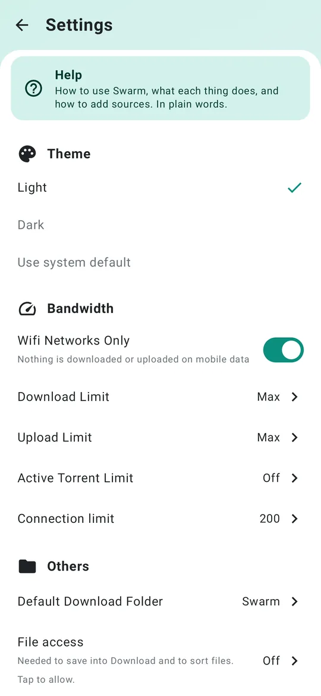
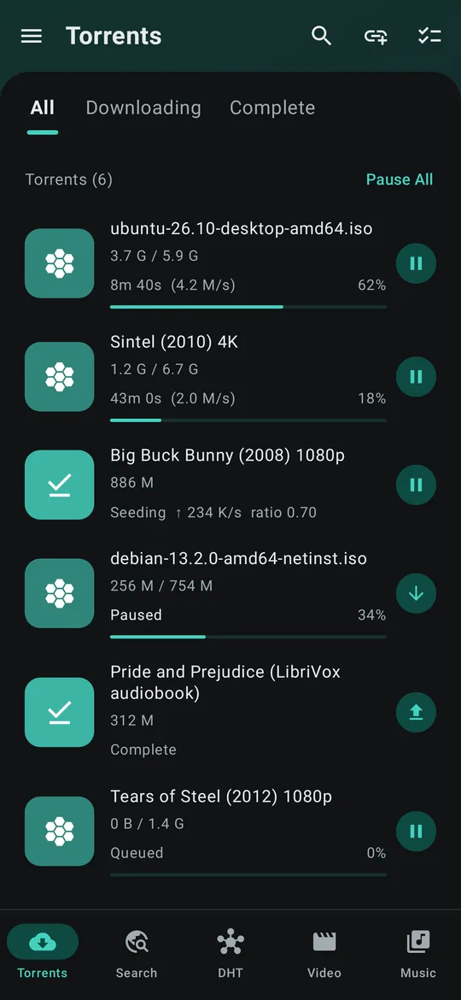
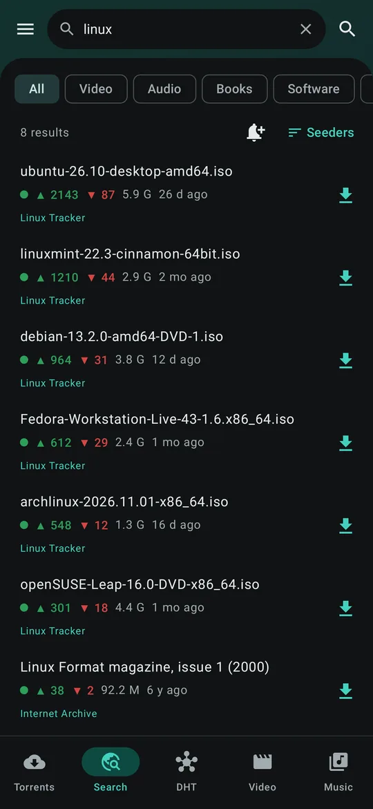
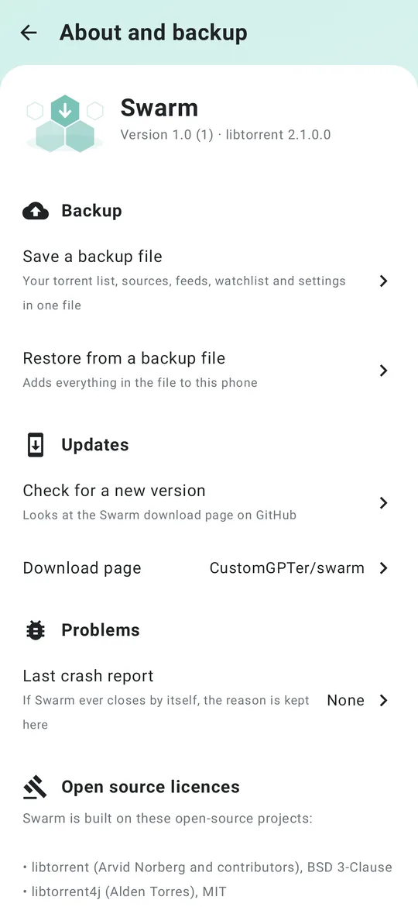

A torrent app that finds the torrents too
Swarm is a torrent app for Android with search built in. Type a few words, see how many people are sharing each result, how big it is and how old, and tap Download. It goes straight into your list.
It is free, with no paid version and no adverts. Light by default, with a dark theme in Settings.
Free, with nothing to unlock. Android 10 or later. No ads, no accounts, no tracking. Compare · Release notes
Chrome may say the file might be harmful. It shows this for app files that do not come from Google Play. Choose Download anyway.


How it works
Most torrent apps wait for you to bring them a link from somewhere else. Swarm can do that, and it can also go and look.
Find it
Search by keyword on the Search tab, or look through the index on the DHT tab. Or bring your own: paste a magnet link, open a torrent file, or scan a QR code.
Check it
Every result shows its numbers, such as ▲ 2143 ▼ 87 · 5.9 G · 26 d ago. Tap one for its file list, where it came from, and any warning.
Download it
Tap Download and it starts at once on the Torrents tab. Watch a video while the rest arrives, or leave it to finish in the background.
Everything a torrent app should do, and the looking
Five tabs: Torrents, Search, DHT, Video and Music. The rest is in the side menu.
- Search with the numbers that matter
- Seeders, leechers, size and age on every result, checked live against the trackers. Sort by any of them, or narrow to video, audio, books or software.
- A DHT index of your own
- Swarm listens to the network torrent apps share, notes the torrents it hears about, and keeps a searchable index on your phone. Nobody else holds it.
- Sources you choose
- The Internet Archive and Linux Tracker are built in. Add a Torznab address from Jackett or Prowlarr, or the address of any website's results page, and Swarm reads that too.
- Play while it downloads
- Play now fetches a video from the start so you can watch before it has finished. The Video and Music tabs play what you already have, with music carrying on in the background.
- Only the files you want
- Untick the files you do not need, put one at the front of the queue, and set speed limits for a single torrent.
- Kind to your data and battery
- Wi-Fi only from the start. Speed limits, scheduled hours, only while charging, a battery saver, and an option to close when everything has finished.
- Seeding on your terms
- Give back as much as you took, a different ratio, nothing, or keep going. Uploading can be kept to Wi-Fi.
- Safety checks
- A warning when a file is a program dressed up as a video, when a video is too small to be real, or when a torrent has nobody sharing it. Swarm will not open program files.
- Feeds and a watchlist
- Follow RSS feeds, with filters, and download matches by themselves. Watch a search, and Swarm tells you when something new turns up.
- The rest of the toolbox
- Make a torrent from your own files, share one as a QR code, block address ranges with a blocklist, and keep everything in one backup file.
What it looks like
Light by default, with a dark theme and one that follows the phone.








What it asks of your phone
Swarm has no access to your contacts, location or microphone, and uses what it does have only for what is listed here.
| Access | What Swarm does with it | What it never does |
|---|---|---|
| Internet access | Connects to other people sharing a torrent, to trackers and to the DHT. Sends your search words to the sources you have switched on. Checks GitHub for a newer version. | Send anything to the developer. Swarm has no servers of its own. |
| Wi-Fi and network state | Tells Wi-Fi from mobile data, notices a VPN, and finds other torrent apps on your own Wi-Fi network. | Read the names of networks you have used, or work out where you are. |
| All files access | Saves downloads into Download/Swarm and sorts finished ones into folders. Reads a file or folder you pick when you make a torrent of your own. | Read, copy or upload any other file. Only the torrents you add are shared. |
| Videos and music | Lists the video and audio files on your phone in the Video and Music tabs. | Send the list anywhere. |
| Notifications | Shows how downloads are going, tells you when one is ready or a watched search has something new, and holds the music controls. | Send adverts, offers or reminders. |
| Running in the background | Keeps torrents going when you switch apps or turn the screen off, and runs the DHT crawler while the phone charges on Wi-Fi. | Download or upload torrents on mobile data while Wi-Fi only is on. |
| Camera | Scans a QR code that holds a magnet link, when you tap Scan QR. | Take or keep pictures. |
The detail is in the privacy policy.
Nobody in the middle
No servers
Swarm has no accounts and no servers of its own. The developer never learns what you search for, download or share.
No ads, no tracking
There is no advertising, no analytics and no tracking in the app or on this site.
Straight talk about torrents
Other people sharing a torrent can see your internet address. Swarm says so when you first open it, and warns you when no VPN is on.
Free, including what others charge for
Swarm has no paid version and carries no adverts. Going by their own Google Play listings, two of the best-known Android torrent apps show adverts, and one keeps a feature for its paid edition.
- No adverts
- BitTorrent and Flud both carry adverts, and both have in-app purchases.
- Closing when downloads finish
- Marked as a Pro feature by BitTorrent.
- Search and a DHT index
- Not listed by BitTorrent or by Flud.
- Open source
- Swarm's source code is public, so anyone can check what it does.
Questions
Is Swarm really free?
Yes. There is no paid version, no subscription and no adverts, and nothing in the app is locked. It is also open source. See the comparison.
Is Swarm on Google Play?
No. Swarm is a personal project and is downloaded from this site as an Android app file. It needs Android 10 or later on a 64-bit phone, which covers almost every phone sold in recent years.
What is a torrent?
A torrent is a file, or a set of files, shared among the people downloading it. Each of them fetches pieces from the others and passes pieces on, so there is no single server to slow down or go offline. A magnet link is a short address for a torrent.
Where does the search look?
In the sources you have switched on. Two are built in: the Internet Archive, for public-domain and freely licensed films, music, books and software, and Linux Tracker, for Linux and other open-source system downloads. You can add your own: a Torznab address from Jackett or Prowlarr, or the address of a website's search results page.
What is the DHT tab?
The DHT is the network torrent apps use to find each other without a central server. It has no search of its own. Swarm listens to it, collects the names and file lists of the torrents it hears about, and keeps them in an index on your phone that you can search. The index starts empty and grows while Swarm is open and, unless you change it, while the phone is charging on Wi-Fi.
Am I allowed to download a torrent?
That depends on what is in it. Download and share only what you have the right to: work in the public domain, work its owner offers freely or under an open licence, or your own. The DHT index and any source you add can list material that is not free to share, and Swarm cannot tell which is which. That judgement is yours. The detail is in the terms.
Can other people see what I download?
Other people sharing the same torrent can see your internet address. That is how BitTorrent works, in every torrent app. Swarm warns you when no VPN is on, and can be set to stop all torrent traffic without one. Its encryption setting hides torrent traffic from simple network filters, but it does not hide your address.
Does Swarm upload as well as download?
Yes. While a torrent downloads, the pieces you already have are passed on to others. After it finishes, Swarm carries on until it has given back as much as it took, on Wi-Fi only, then stops. You can set it to stop the moment a download finishes, or to keep going until you pause it.
Will it use my mobile data?
Not unless you let it. Wi-Fi only is switched on when you install Swarm, so nothing is downloaded or uploaded on mobile data until you turn that off.
Where do the files go?
Into a Swarm folder inside your phone's Download folder. When a download finishes it is sorted into Movies, TV, Music, Books or Other. This needs the file access Swarm asks for when you first open it. Without it, downloads are kept in the app's own folder.
Why is the download so large?
The file is about 61 MB because Swarm carries its whole torrent engine with it, along with decoders for the sound formats that phones do not play by themselves.
How do I update Swarm?
Swarm tells you on the Torrents tab when a newer version is on this site. Download it and install it over the one you have. Your torrents, index, sources and settings are kept.
Getting Swarm
Swarm is a personal project and is free, with no paid version. It is downloaded from this site as an Android app file and is not on Google Play. It runs on 64-bit phones and tablets with Android 10 or later.
When you download, Chrome may warn that the file might be harmful. It shows this warning for app files that do not come from Google Play; choose Download anyway. If you want to be sure the file is the real one, compare it with the checksum in the release notes.
Open the downloaded file to install it. The first time, Android asks you to allow your browser to install apps. Google Play Protect may also step in, because Swarm is an app it has not seen before: choose More details, then Install anyway. To update, install the latest version over the one you have: your torrents and settings are kept. What changed in each version is in the release notes.
Swarm is open source, and its source code is on GitHub. For a question, a problem, or anything about your data, open an issue on GitHub.